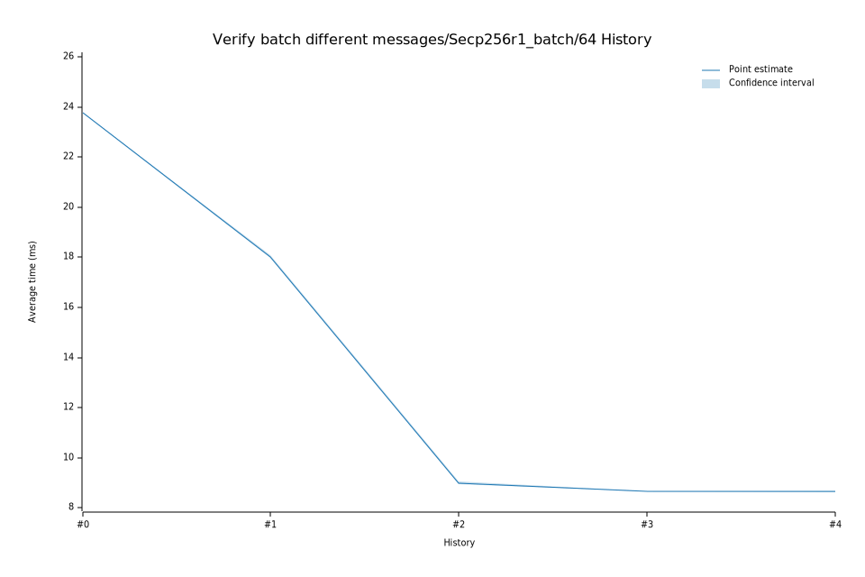

# 42024-02-01T08:34:32Z
|
Lower Bound |
Estimate |
Upper Bound |
| Value: |
8.63ms |
8.65ms |
8.66ms |
| Change in Value: |
-0.4153% |
-0.2242% |
-0.0711% |
No change in performance detected.
# 32024-01-09T09:16:57Z
|
Lower Bound |
Estimate |
Upper Bound |
| Value: |
8.66ms |
8.66ms |
8.67ms |
| Change in Value: |
-4.7539% |
-4.3438% |
-3.9030% |
No change in performance detected.
# 22023-06-01T08:16:50Z
|
Lower Bound |
Estimate |
Upper Bound |
| Value: |
8.95ms |
9.00ms |
9.06ms |
| Change in Value: |
-49.949% |
-49.698% |
-49.410% |
No change in performance detected.
# 12023-04-27T10:03:55Z
|
Lower Bound |
Estimate |
Upper Bound |
| Value: |
17.98ms |
18.03ms |
18.07ms |
| Change in Value: |
-24.535% |
-24.264% |
-24.037% |
No change in performance detected.
# 02023-02-13T20:47:28Z
|
Lower Bound |
Estimate |
Upper Bound |
| Value: |
23.73ms |
23.76ms |
23.79ms |